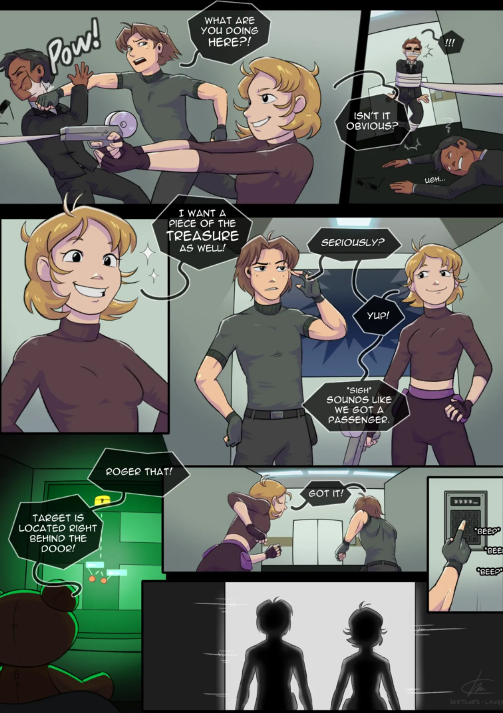
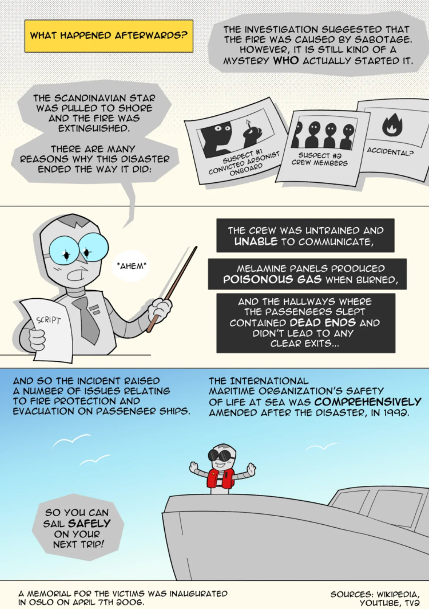
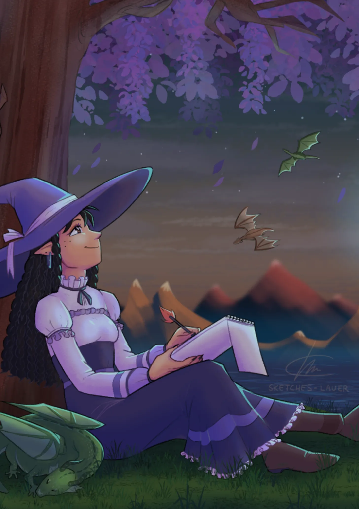
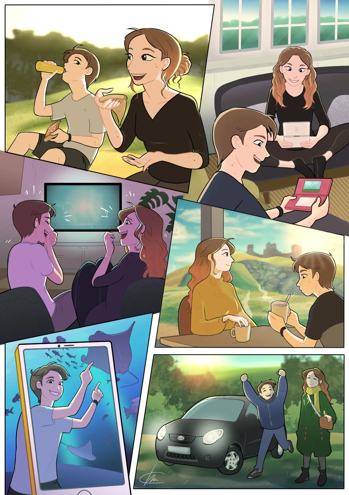
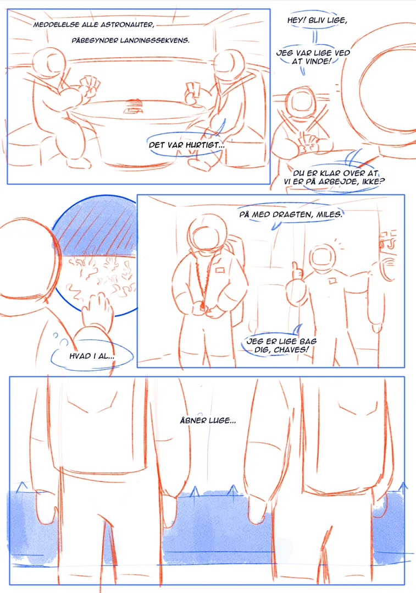
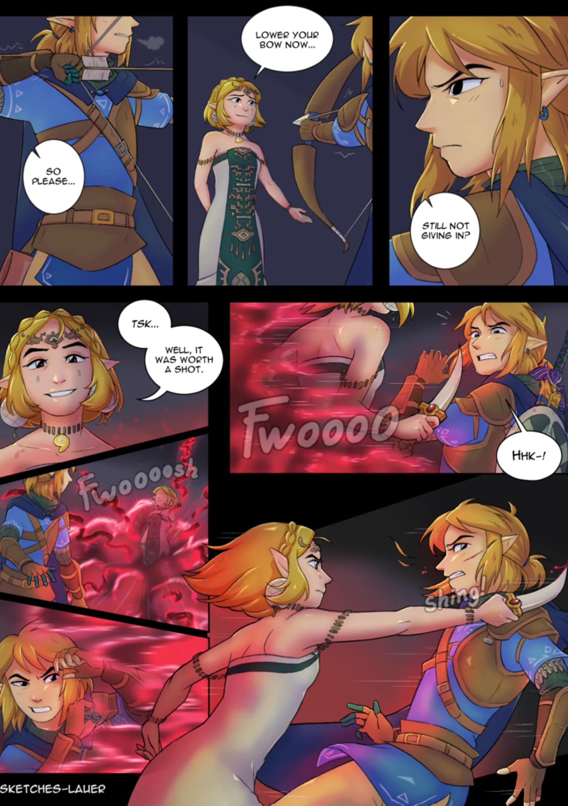
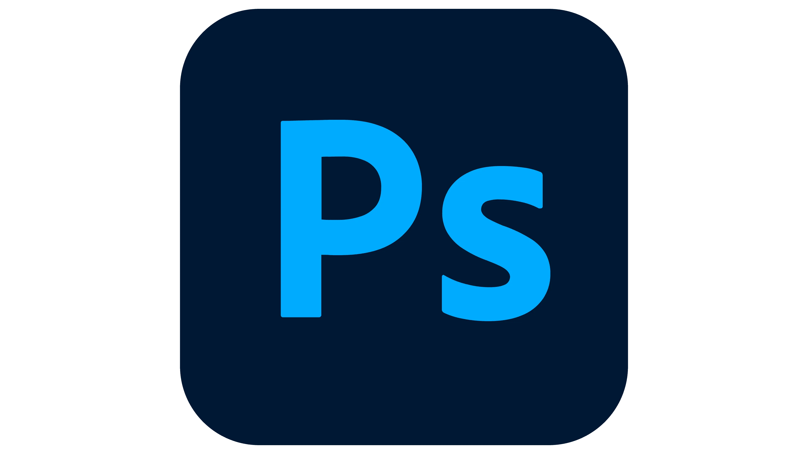
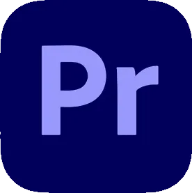

Lau Hoffmeyer Nielsen
Multimediedesigner
Om mig
Hejsa! Jeg hedder Lau.
Jeg er oprindeligt født og opvokset på solskins-glade Bornholm, men er efterfølgende flyttet til Odense for at uddanne mig indenfor det grafiske og nørdede.
En særlig fritidsinteresse, som altid har fungeret som mit frirum hvor jeg kan udfordre mig selv, har været mine tegneserier. Jeg har altid elsket at skabe modige og eventyrlystne karakterer, samt opdigte og skabe historier og eventyr. Prøv at se her:






Min digitale værktøjskasse
Jeg har erfaring indenfor adskillige Adobe programmer og kan benytte de fleste video- og tegneprogrammer. Her er det jeg er bedst til:
HTML & CSS

Wordpress
Photoshop

After Effects

Premiere Pro

Clip Studio